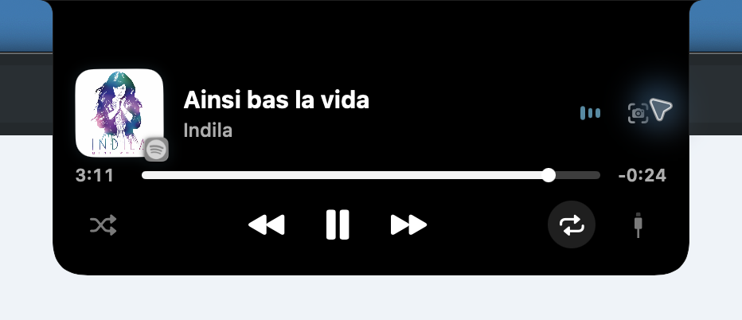
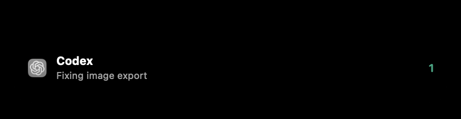

Capture. Control.


Your notch. Now useful.
The next small win.
✓ Copied.
CopySaveAnnotateShare
Keep your music close.


Less switching.
CaptureMusicShelfAgent activity

Everything within reach.
NotchShot
Capture. Control. Continue.
Made for macOS.
github.com/7vibex/NotchShot